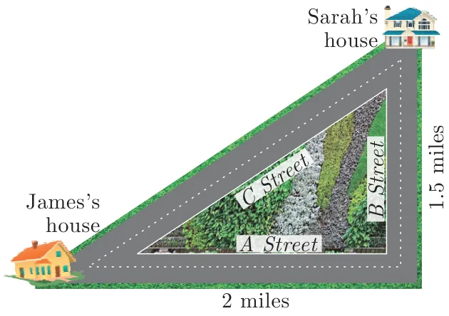
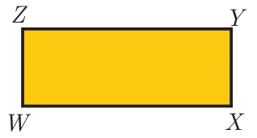
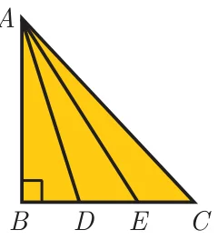

Exercise 4.3
- A man goes 18 m due east and then 24 m due north. Find the distance of his current position from the starting point?
- There are two paths that one can choose to go from Sarah’s house to James house. One way is to take \(C\) street, and the other way requires to take \(B\) street and then \(A\) street. How much shorter is the direct path along \(C\) street? (Using figure).

- To get from point \(A\) to point \(B\) you must avoid walking through a pond. You must walk 34 m south and 41 m east. To the nearest meter, how many meters would be saved if it were possible to make a way through the pond?
- In the rectangle \(WXYZ\), \(XY + YZ = 17\) cm, and \(XZ + YW = 26\) cm. Calculate the length and breadth of the rectangle?

- The hypotenuse of a right triangle is 6 m more than twice of the shortest side. If the third side is 2 m less than the hypotenuse, find the sides of the triangle.
- 5 m long ladder is placed leaning towards a vertical wall such that it reaches the wall at a point 4m high. If the foot of the ladder is moved 1.6 m towards the wall, then find the distance by which the top of the ladder would slide upwards on the wall.
- The perpendicular \(PS\) on the base \(QR\) of a \(\Delta PQR\) intersects \(QR\) at \(S\), such that \(QS = 3\,SR\). Prove that \(2PQ^2 = 2PR^2 + QR^2\)
- In the adjacent figure, \(ABC\) is a right angled triangle with right angle at \(B\) and points \(D\), \(E\) trisect \(BC\). Prove that \(8AE^2 = 3AC^2 + 5AD^2\)
